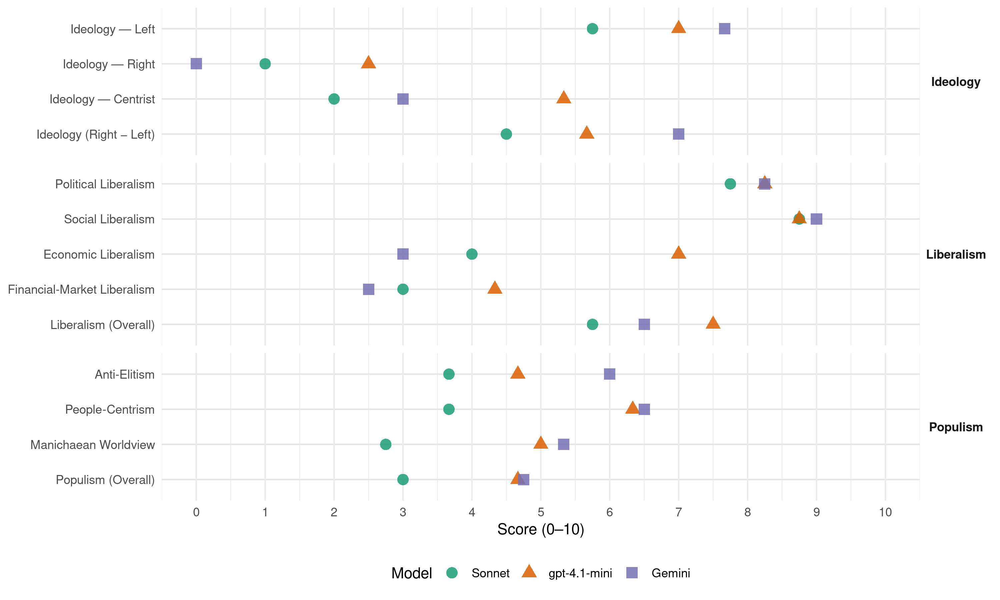

GRÜNE (Austria, 2013)
manifesto_id 42110_201309
Get full text: This site shows derived annotations and short verbatim quotes only. The full manifesto text is © Manifesto Project / WZB — obtain it via manifesto-project.wzb.eu using the manifesto_id above.
Headline scores
| Dimension | Sonnet | gpt-4.1-mini | Gemini |
|---|---|---|---|
| Populism (Overall) | 3.0 | 4.7 | 4.8 |
| Anti-Elitism | 3.7 | 4.7 | 6.0 |
| People-Centrism | 3.7 | 6.3 | 6.5 |
| Manichaean Worldview | 2.8 | 5.0 | 5.3 |
| Ideology (Right − Left) | 4.5 | 5.7 | 7.0 |
| Liberalism (Overall) | 5.8 | 7.5 | 6.5 |
| Political Liberalism | 7.8 | 8.2 | 8.2 |
| Social Liberalism | 8.8 | 8.8 | 9.0 |
| Economic Liberalism | 4.0 | 7.0 | 3.0 |
| Financial-Market Liberalism | 3.0 | 4.3 | 2.5 |
Evidence per dimension
Economic Liberalism
Gemini · score 5.0 · mixed · chunk 1
“Entlastung für 380.000 Einpersonen- und Kleinstunternehmen”
grünes wirtschaften: einen schritt voraus denken ………………………………………………… 39investieren in die Zukunft – Die Grüne Jobs initiative ……………………………………………………………….. 40Entlastung für 380.000 Einpersonen- und Kleinstunternehmen ……………………………………………..
Gemini · score 4.0 · verified · chunk 2
“ökologisch-soziale steuerreform bedeutet steuerliche Belohnung”
Eine ökologisch-soziale steuerreform bedeutet steuerliche Belohnung von verantwortungsvollem Umgang mit Energie und Verkehr
Gemini · score 3.0 · verified · chunk 3
“ein gesetzlicher Mindestlohn in allen Branchen”
wirtschaftsförderung und die öffentlichen auftragsvergabe sind an innerbetriebliche Frauenförderung zu koppeln… ein gesetzlicher Mindestlohn in allen Branchen sowie anonymisierte Bewerbungsverfahren
Gemini · score 2.0 · verified · chunk 4
“nicht kritiklos den regeln des Marktes überantwortet werden”
Gesundheit soll leistbar sein. Chancengleichheit und solidarität können nicht kritiklos den regeln des Marktes überantwortet werden, sondern bedürfen einer langfristigen
gpt-4.1-mini · score 8.0 · verified · chunk 1
“ein leistungsgerechtes, öko-soziales steuersystem”
Finanzmärkte an die leine nehmen und aus der Krise führen ……………………………………………. 34ein leistungsgerechtes, öko-soziales steuersystem ……………………………………………………………… 37grünes wirtschaften: einen schritt voraus denken ………………………………………………………………. 39investieren in die Zukunft – Die Grüne Jobs initiative ……………………………………………………………….. 40Entlastung für 380.000 Einpersonen- und Kleinstunternehmen …………………………………………….. 42Österreich fit für die Zukunft machen – durch Forschung, innovation und technologie ……… 44
gpt-4.1-mini · score 6.0 · verified · chunk 2
“steuerwettbewerb durch steuerdumping und der steuerhinterziehung”
Um den nationalen Kuhhandel in den Verhandlungen zum EU-Budget zu beenden, fordern wir eigene EU-steuern (z. B. Finanztransaktionssteuer, europäische Kerosinbesteuerung, einheitliche Unternehmenssteuern). Generell soll dem steuerwettbewerb durch steuerdumping und der steuerhinterziehung in Europa ein Ende gesetzt werden.
gpt-4.1-mini · score 7.0 · verified · chunk 3
“Es ist Zeit, die Verhältnisse wieder zurechtzurücken: mit einem fairen steuersystem. Mit einem Einkommen zum auskommen. Mit einer Grundsicherung, die für Jung und alt Zukunftsperspektiven schafft”
eine Frage der Gerechtigkeit: ein Leistbarwa Leben für alle wir alle merken es: höhere lebenshaltungskosten, die Explosion von Miet- und wohnausgaben, und netto weniger lohn für mehr arbeit. während superreiche ihr Vermögen in steueroasen parken, fragen sich immer mehr Menschen: wie kann ich mir ein gutes leben leisten? Es ist Zeit, die Verhältnisse wieder zurechtzurücken: mit einem fairen steuersystem. Mit einem Einkommen zum auskommen. Mit einer Grundsicherung, die für Jung und alt Zukunftsperspektiven schafft.
gpt-4.1-mini · score 7.0 · verified · chunk 4
“Chancengleichheit und Solidarität können nicht kritiklos den Regeln des Marktes überantwortet werden”
Gesundheit soll leistbar sein. Chancengleichheit und Solidarität können nicht kritiklos den Regeln des Marktes überantwortet werden, sondern bedürfen einer langfristigen Finanzierungssicherheit.
Sonnet · score 5.0 · mixed · chunk 1
“Energieeffizienz wird zum attraktiven Markt”
Energieeffizienz-Gesetz sorgt dafür, dass unnötig hoher Energieverbrauch reduziert wird. Energieeffizienz wird zum attraktiven Markt für Österreichs wirtschaft
Sonnet · score 4.0 · verified · chunk 2
“steuerwettbewerb durch steuerdumping”
Generell soll dem steuerwettbewerb durch steuerdumping und der steuerhinterziehung in Europa ein Ende gesetzt werden.
Sonnet · score 4.0 · verified · chunk 3
“gesetzlicher Mindestlohn in allen Branchen”
transparente Einkommenspolitik, ein gesetzlicher Mindestlohn in allen Branchen sowie anonymisierte Bewerbungsverfahren gewährleisten faire Entlohnung
Sonnet · score 4.0 · verified · chunk 4
“den regeln des Marktes überantwortet werden”
Chancengleichheit und solidarität können nicht kritiklos den regeln des Marktes überantwortet werden, sondern bedürfen einer langfristigen Finanzierungssicherheit.
Financial-Market Liberalism
Gemini · score 3.0 · verified · chunk 1
“Finanzmärkte an die leine nehmen”
nur ein gemeinsames europa meistert die Krise …………………………………………………….. 29Finanzmärkte an die leine nehmen und aus der Krise führen …………………………………………….
Gemini · score 2.0 · verified · chunk 2
“strenge regeln für die Finanzmärkte”
Dafür braucht es strenge regeln für die Finanzmärkte, die rasche Einführung einer Finanztransaktionssteuer und
gpt-4.1-mini · score 7.0 · verified · chunk 1
“Finanzmärkte an die leine nehmen”
Finanzmärkte an die leine nehmen und aus der Krise Führen Die Krisen der letzten Jahre machen deutlich, dass eine verstärkte Überwachung und Neuregulierung der Finanzmärkte und Banken notwendig ist. Die jahrelange Zockerei auf den Finanzmärkten hat unser wirtschafts- und Finanzsystem an den rand des Kollapses gebracht.
gpt-4.1-mini · score 4.0 · verified · chunk 2
“strenge regeln für die Finanzmärkte, die rasche Einführung einer Finanztransaktionssteuer”
Nur durch entschiedenes Vorgehen können spekulationen wirksam eingedämmt werden und der Bankensektor redimensioniert werden. Dafür braucht es strenge regeln für die Finanzmärkte, die rasche Einführung einer Finanztransaktionssteuer und ein entschiedenes Vorgehen gegen steueroasen durch einen europaweiten steuerpakt.
gpt-4.1-mini · score 2.0 · verified · chunk 3
“Die Uni-Milliarde der regierung ist hier lediglich ein Flickwerk. Das hochschulbudget ist seit vielen Jahren real gesunken, weil es nicht inflationsangepasst wurde”
Um international erfolgreich sein zu können, sind hochschulen auf einen stabilen Finanzierungspfad angewiesen. Die Uni-Milliarde der regierung ist hier lediglich ein Flickwerk. Das hochschulbudget ist seit vielen Jahren real gesunken, weil es nicht inflationsangepasst wurde. Von einer vernünftigen Dimension der Betreuungsverhältnisse, qualitativ gesicherter hochwertiger ausbildung und realistischen studienzeiten ohne unverschuldete wartezeiten ist die Universität mittlerweile weit entfernt.
Sonnet · score 3.0 · verified · chunk 1
“Finanztransaktionssteuer ohne Verwässerung rasch realisieren”
Die Finanztransaktionssteuer (Ftt) auf EU-Ebene wird helfen, spekulationen einzudämmen und das Finanzsystem zu stabilisieren
Sonnet · score 2.0 · verified · chunk 2
“hemmungslos deregulierte Finanzmärkte haben”
hemmungslos deregulierte Finanzmärkte haben in den Jahren 2007/2008 zum ausbruch der Finanz- und wirtschaftskrise geführt. Nur durch entschiedenes Vorgehen können spekulationen wirksam eingedämmt werden
Sonnet · score 3.0 · verified · chunk 3
“wohnraum ist jedoch ein menschliches Grundbedürfnis, kein spekulationsobjekt”
wohnraum ist jedoch ein menschliches Grundbedürfnis, kein spekulationsobjekt. Mieten müssen leistbar sein. reformen im bzw. bei der Umsetzung des Mietrechts
Sonnet · score 4.0 · verified · chunk 4
“Finanz- und wirtschaftskrise”
ob Klimakrise oder ressourcenkonflikte, welternährung oder Finanz- und wirtschaftskrise. Globale Probleme brauchen gemeinsame lösungen.
Political Liberalism
Gemini · score 9.0 · verified · chunk 1
“echte Mitbestimmung und Demokratie”
Chancengleichheit für Frauen. > für echte Mitbestimmung und Demokratie. Die Grünen haben bewiesen
Gemini · score 8.0 · verified · chunk 2
“Demokratisierung der Europäischen Union vorangetrieben”
in diesem werden nicht nur die Demokratisierung der Europäischen Union vorangetrieben, sondern auch die weichen für eine andere
Gemini · score 8.0 · verified · chunk 3
“um das interesse an Demokratie zu stärken”
Es braucht jedoch weiterführende Maßnahmen, um das interesse an Demokratie zu stärken. Demokratiepolitische Bildung soll für alle
Gemini · score 8.0 · verified · chunk 4
“für Grund- und Menschenrechte sowie Chancengleichheit”
Österreich erneuern, > für eine saubere Umwelt und gesunde Bio-Lebensmittel. > für ein leistbares Leben für alle. > für Kindergärten und Schulen, die kein Kind zurücklassen. > für Grund- und Menschenrechte sowie Chancengleichheit für Frauen.
gpt-4.1-mini · score 9.0 · verified · chunk 1
“Demokratie weiterentwickeln”
Demokratie weiterentwickeln ………………………………………………………………………………………………………… 47Eine Partnerschaft mit der Zivilgesellschaft ………………………………………………………………………………… 50netzpolitik: Freiheit & Verantwortung in der informationsgesellschaft ………………………….. 53Vielfältige medien – unabhängiger orF …………………………………………………………………………………… 57datenschutz ist menschenschutz und Bürgerinnenrecht …………………………………………………….. 59
gpt-4.1-mini · score 8.0 · verified · chunk 2
“Europäische Bürgerinneninitiative, das erste direkt demokratische instrument”
Die mittlerweile bestehende Möglichkeit einer Europäischen Bürgerinneninitiative, das erste direkt demokratische instrument auf europäischer Ebene, ist weiter zu entwickeln.
gpt-4.1-mini · score 8.0 · verified · chunk 3
“Demokratie braucht Zeit und Übung. Die schule ist ein ort, an dem das Gemeinschaftliche im Vordergrund steht und teilhabe an demokratiepolitischen Prozessen geübt wird”
Schülerinnen werden ab dem Pflichtschulalter demokratiepolitische Entscheidungsprozess aktiv näher gebracht, wie etwa die wahl des/r Klassensprecherin oder die Mitgestaltung in der schwerpunktsetzung des lehrplanes. Demokratie braucht Zeit und Übung. Die schule ist ein ort, an dem das Gemeinschaftliche im Vordergrund steht und teilhabe an demokratiepolitischen Prozessen geübt wird.
gpt-4.1-mini · score 8.0 · verified · chunk 4
“Grundsatz „health in all Policies“ – also gesundheitsfördernde Politik in allen Bereichen”
Wir treten für den Grundsatz „health in all Policies“ – also gesundheitsfördernde Politik in allen Bereichen – ein. Dafür ist eine inklusive, gesundheitsfördernde Politik am Arbeitsmarkt ebenso notwendig wie in der Armutsprävention, in der Lebensmittelerzeugung oder im Verkehrsbereich.
Sonnet · score 8.0 · verified · chunk 1
“Demokratie weiterentwickeln”
demokratie – Zivilgesellschaft – Bürgerinnenrechte. Demokratie weiterentwickeln. Eine Partnerschaft mit der Zivilgesellschaft
Sonnet · score 8.0 · verified · chunk 2
“Demokratisierung der Europäischen Union vorangetrieben”
in diesem werden nicht nur die Demokratisierung der Europäischen Union vorangetrieben, sondern auch die weichen für eine andere Krisenpolitik gestellt.
Sonnet · score 7.0 · verified · chunk 3
“wählen ab 16 ist ein großer demokratiepolitischer schritt”
Politische Bildung wird bedeutsamer: wählen ab 16 ist ein großer demokratiepolitischer schritt gewesen. Es braucht jedoch weiterführende Maßnahmen
Sonnet · score 8.0 · verified · chunk 4
“Demokratie, globale rechtsstaatlichkeit”
Österreich tritt international ein für Demokratie, globale rechtsstaatlichkeit und die Gleichberechtigung aller Menschen, insbesondere von Frauen.
Liberalism (Overall)
Gemini · score 7.0 · verified · chunk 1
“echte Mitbestimmung und Demokratie”
Chancengleichheit für Frauen. > für echte Mitbestimmung und Demokratie. Die Grünen haben bewiesen
Gemini · score 6.0 · verified · chunk 2
“Demokratisierung der Europäischen Union vorangetrieben”
in diesem werden nicht nur die Demokratisierung der Europäischen Union vorangetrieben, sondern auch die weichen für eine andere
Gemini · score 7.0 · verified · chunk 3
“um das interesse an Demokratie zu stärken”
Es braucht jedoch weiterführende Maßnahmen, um das interesse an Demokratie zu stärken. Demokratiepolitische Bildung soll für alle
Gemini · score 6.0 · verified · chunk 4
“für Grund- und Menschenrechte sowie Chancengleichheit”
Österreich erneuern, > für eine saubere Umwelt und gesunde Bio-Lebensmittel. > für ein leistbares Leben für alle. > für Kindergärten und Schulen, die kein Kind zurücklassen. > für Grund- und Menschenrechte sowie Chancengleichheit für Frauen.
gpt-4.1-mini · score 8.0 · verified · chunk 1
“Finanzmärkte an die leine nehmen und aus der Krise führen”
Finanzmärkte an die leine nehmen und aus der Krise führen ……………………………………………. 34ein leistungsgerechtes, öko-soziales steuersystem ……………………………………………………………… 37grünes wirtschaften: einen schritt voraus denken ………………………………………………………………. 39investieren in die Zukunft – Die Grüne Jobs initiative ……………………………………………………………….. 40Entlastung für 380.000 Einpersonen- und Kleinstunternehmen …………………………………………….. 42Österreich fit für die Zukunft machen – durch Forschung, innovation und technologie ……… 44
gpt-4.1-mini · score 7.0 · verified · chunk 2
“Europäische Bürgerinneninitiative, das erste direkt demokratische instrument”
Die mittlerweile bestehende Möglichkeit einer Europäischen Bürgerinneninitiative, das erste direkt demokratische instrument auf europäischer Ebene, ist weiter zu entwickeln.
gpt-4.1-mini · score 7.0 · verified · chunk 3
“Es ist Zeit, die Verhältnisse wieder zurechtzurücken: mit einem fairen steuersystem. Mit einem Einkommen zum auskommen. Mit einer Grundsicherung, die für Jung und alt Zukunftsperspektiven schafft”
eine Frage der Gerechtigkeit: ein Leistbarwa Leben für alle wir alle merken es: höhere lebenshaltungskosten, die Explosion von Miet- und wohnausgaben, und netto weniger lohn für mehr arbeit. während superreiche ihr Vermögen in steueroasen parken, fragen sich immer mehr Menschen: wie kann ich mir ein gutes leben leisten? Es ist Zeit, die Verhältnisse wieder zurechtzurücken: mit einem fairen steuersystem. Mit einem Einkommen zum auskommen. Mit einer Grundsicherung, die für Jung und alt Zukunftsperspektiven schafft.
gpt-4.1-mini · score 8.0 · verified · chunk 4
“Grundsatz „health in all Policies“ – also gesundheitsfördernde Politik in allen Bereichen”
Wir treten für den Grundsatz „health in all Policies“ – also gesundheitsfördernde Politik in allen Bereichen – ein. Dafür ist eine inklusive, gesundheitsfördernde Politik am Arbeitsmarkt ebenso notwendig wie in der Armutsprävention, in der Lebensmittelerzeugung oder im Verkehrsbereich.
Sonnet · score 6.0 · verified · chunk 1
“Grund- und Menschenrechte und Chancengleichheit”
für Grund- und Menschenrechte und Chancengleichheit für Frauen. für echte Mitbestimmung und Demokratie
Sonnet · score 5.0 · verified · chunk 2
“Demokratisierung der Europäischen Union vorangetrieben”
in diesem werden nicht nur die Demokratisierung der Europäischen Union vorangetrieben, sondern auch die weichen für eine andere Krisenpolitik gestellt.
Sonnet · score 6.0 · verified · chunk 3
“Diskriminierung aufgrund sexueller orientierung und Geschlechtsidentität”
Es gilt, Diskriminierung aufgrund sexueller orientierung und Geschlechtsidentität abzuschaffen.
Sonnet · score 6.0 · verified · chunk 4
“Demokratie, globale rechtsstaatlichkeit”
Österreich tritt international ein für Demokratie, globale rechtsstaatlichkeit und die Gleichberechtigung aller Menschen, insbesondere von Frauen.
Anti-Elitism
Gemini · score 8.0 · verified · chunk 1
“Korruption, Freunderlwirtschaft und fehlende transparenz”
liebe wählerin, lieber wähler! Korruption, Freunderlwirtschaft und fehlende transparenz haben das Vertrauen in Österreichs Politik beschädigt.
Gemini · score 7.0 · verified · chunk 2
“Zockerei auf den Finanzmärkten hat unser”
Die jahrelange Zockerei auf den Finanzmärkten hat unser wirtschafts- und Finanzsystem an den rand des Kollapses gebracht.
Gemini · score 3.0 · verified · chunk 3
“auch „dank“ ihrer öffentlich stark auftretenden Gewerkschaft”
Die rolle der lehrerinnen und lehrer wird jedoch häufig – auch „dank“ ihrer öffentlich stark auftretenden Gewerkschaft – auf die Frage reduziert
Gemini · score 6.0 · verified · chunk 4
“sPÖ und ÖVP regieren in die Exekutive schamlos hinein”
auch die Parteibuchwirtschaft machte vor der Polizei nicht halt. sPÖ und ÖVP regieren in die Exekutive schamlos hinein. wir wollen die Beamtinnen vor der Politik schützen.
gpt-4.1-mini · score 7.0 · verified · chunk 1
“Korruption, Machtmissbrauch und mangelnde transparenz in der Politik”
Das Bündnis mit all jenen Menschen, die zu recht verärgert sind über Korruption, Machtmissbrauch und mangelnde transparenz in der Politik. Mit jenen, die nicht mehr verschaukelt werden wollen von gierigen akteurinnen am Finanzmarkt, sondern Gerechtigkeit und solidarität einfordern.
gpt-4.1-mini · score 5.0 · verified · chunk 2
“steuerwettbewerb durch steuerdumping und der steuerhinterziehung”
Um den nationalen Kuhhandel in den Verhandlungen zum EU-Budget zu beenden, fordern wir eigene EU-steuern (z. B. Finanztransaktionssteuer, europäische Kerosinbesteuerung, einheitliche Unternehmenssteuern). Generell soll dem steuerwettbewerb durch steuerdumping und der steuerhinterziehung in Europa ein Ende gesetzt werden.
gpt-4.1-mini · score 2.0 · verified · chunk 3
“die rolle der lehrerinnen und lehrer wird jedoch häufig – auch „dank“ ihrer öffentlich stark auftretenden Gewerkschaft – auf die Frage reduziert, wie viele stunden sie im Klassenzimmer verbringen”
Gut ausgebildete und kompetente lehrerinnen sind der schlüssel zum Erfolg. Österreich hat viele lehrkräfte, die großes Engagement im Klassenzimmer zeigen. Die rolle der lehrerinnen und lehrer wird jedoch häufig – auch „dank“ ihrer öffentlich stark auftretenden Gewerkschaft – auf die Frage reduziert, wie viele stunden sie im Klassenzimmer verbringen. Ein neues Dienst-recht und eine reform der ausbildung der lehrenden wird dabei eine wichtige rolle spielen.
Sonnet · score 5.0 · mixed · chunk 1
“gierigen akteurinnen am Finanzmarkt”
nicht mehr verschaukelt werden wollen von gierigen akteurinnen am Finanzmarkt, sondern Gerechtigkeit und solidarität einfordern
Sonnet · score 5.0 · verified · chunk 2
“Gier regiert die Bankenwelt”
spekulieren sie mit den spareinlagen der Menschen auf den internationalen Finanzmärkten. Gier regiert die Bankenwelt. Die Grünen wollen, dass Banken sich wieder auf ihre Kernkompetenz konzentrieren
Sonnet · score 3.0 · verified · chunk 3
“dank” ihrer öffentlich stark auftretenden Gewerkschaft”
Die rolle der lehrerinnen und lehrer wird jedoch häufig – auch „dank” ihrer öffentlich stark auftretenden Gewerkschaft – auf die Frage reduziert
Sonnet · score 3.0 · verified · chunk 4
“sPÖ und ÖVP regieren in die Exekutive schamlos hinein”
Doch auch die Parteibuchwirtschaft machte vor der Polizei nicht halt. sPÖ und ÖVP regieren in die Exekutive schamlos hinein. wir wollen die Beamtinnen vor der Politik schützen.
Ideology — Centrist
Gemini · score 3.0 · verified · chunk 1
“Österreichs Zukunft in die hand”
Nur miteinander können wir Österreichs Zukunft in die hand nehmen. Es geht um nichts weniger als darum
gpt-4.1-mini · score 5.0 · verified · chunk 1
“Nur miteinander können wir Österreichs Zukunft in die hand nehmen”
Die Erneuerung Österreichs kann keine Partei und keine regierung alleine in die wege leiten. sie kann nur von den Menschen, die in diesem land leben, selbst gestaltet werden. Nur miteinander können wir Österreichs Zukunft in die hand nehmen.
gpt-4.1-mini · score 6.0 · verified · chunk 2
“Europapolitische initiativen und Entscheidungen sind in gegenseitiger abstimmung”
Österreichs Europapolitik auf gemeinsame Grundlagen stellen Europa muss ein gemeinsames anliegen der nächsten Bundesregierung werden. Europapolitische initiativen und Entscheidungen sind in gegenseitiger abstimmung und Übereinkunft der regierungspartner, transparent und parlamentarisch abgestimmt zu vollziehen.
gpt-4.1-mini · score 5.0 · verified · chunk 3
“Politische Bildung wird bedeutsamer: wählen ab 16 ist ein großer demokratiepolitischer schritt gewesen. Es braucht jedoch weiterführende Maßnahmen, um das interesse an Demokratie zu stärken”
Kinder haben eine Vielzahl von sozialkontakten und knüpfen Freundschaften weit über den Klassenverbund hinaus. in einer modernen Ganztagsschule können die hausaufgaben entfallen und es bleibt mehr Zeit für echtes Familienleben. Politische Bildung wird bedeutsamer: wählen ab 16 ist ein großer demokratiepolitischer schritt gewesen. Es braucht jedoch weiterführende Maßnahmen, um das interesse an Demokratie zu stärken.
Sonnet · score 2.0 · verified · chunk 1
“klare Vorstellungen für die Zukunft hat”
nicht durch populistische, platte sprüche und scharfmacherei auszeichnet, sondern klare Vorstellungen für die Zukunft hat
Sonnet · score 2.0 · verified · chunk 2
“Die Grünen sind eine wirtschaftspartei”
grünes Wirtschaften: einen Schritt Voraus denken Die Grünen sind eine wirtschaftspartei.
Sonnet · score 2.0 · verified · chunk 3
“Chancen für alle”
sie setzt auf individuelle Förderung aller schülerinnen und ermöglicht damit Chancen für alle.
Sonnet · score 2.0 · verified · chunk 4
“Chancengleichheit, Mitbestimmung und anerkennung”
alle Menschen, die in Österreich leben, sollen die Chance haben ihre Potenziale voll zu entfalten. Dazu braucht es Chancengleichheit, Mitbestimmung und anerkennung.
Ideology — Left
Gemini · score 8.0 · verified · chunk 1
“Gerechtigkeit und solidarität einfordern”
nicht mehr verschaukelt werden wollen von gierigen akteurinnen am Finanzmarkt, sondern Gerechtigkeit und solidarität einfordern.
Gemini · score 8.0 · verified · chunk 2
“Finanzierung notwendiger investitionen sowie des sozialstaats”
Nur durch eine vereinheitlichte steuerpolitik in Europa kann die Finanzierung notwendiger investitionen sowie des sozialstaats gesichert werden.
Gemini · score 7.0 · verified · chunk 4
“Chancengleichheit und solidarität können nicht kritiklos den regeln des Marktes überantwortet werden”
Gesundheit soll leistbar sein. Chancengleichheit und solidarität können nicht kritiklos den regeln des Marktes überantwortet werden, sondern bedürfen einer langfristigen Finanzierungssicherheit.
gpt-4.1-mini · score 7.0 · verified · chunk 1
“Gerechtigkeit und solidarität einfordern”
Mit jenen, die nicht mehr verschaukelt werden wollen von gierigen akteurinnen am Finanzmarkt, sondern Gerechtigkeit und solidarität einfordern. Und vor allem auch mit all jenen, die dazu beitragen wollen, dass die welt ein besserer ort wird, an dem lebensqualität, Umwelt und Gesundheit ins Zentrum rücken und unsere Gesellschaft dank der besten Bildungsangebote und politischer Beteiligung von allen gestaltet wird.
gpt-4.1-mini · score 7.0 · verified · chunk 2
“soziale Verwerfungen und lohn- und sozialdumping”
Europäische Sozialunion stärken wir treten auf europäischer Ebene gegen soziale Verwerfungen und lohn- und sozialdumping auf. Dazu braucht es in der gesamten EU gesetzlich verankerte Mindestlöhne, von denen arbeitnehmerinnen leben können, und ein soziales Netz, das die Bürgerinnen in allen lebenslagen absichert.
gpt-4.1-mini · score 7.0 · verified · chunk 3
“Es ist Zeit, die Verhältnisse wieder zurechtzurücken: mit einem fairen steuersystem. Mit einem Einkommen zum auskommen. Mit einer Grundsicherung, die für Jung und alt Zukunftsperspektiven schafft”
eine Frage der Gerechtigkeit: ein Leistbarwa Leben für alle wir alle merken es: höhere lebenshaltungskosten, die Explosion von Miet- und wohnausgaben, und netto weniger lohn für mehr arbeit. während superreiche ihr Vermögen in steueroasen parken, fragen sich immer mehr Menschen: wie kann ich mir ein gutes leben leisten? Es ist Zeit, die Verhältnisse wieder zurechtzurücken: mit einem fairen steuersystem. Mit einem Einkommen zum auskommen. Mit einer Grundsicherung, die für Jung und alt Zukunftsperspektiven schafft.
Sonnet · score 5.0 · verified · chunk 1
“Gerechtigkeit und solidarität einfordern”
nicht mehr verschaukelt werden wollen von gierigen akteurinnen am Finanzmarkt, sondern Gerechtigkeit und solidarität einfordern
Sonnet · score 7.0 · verified · chunk 2
“Vermögen in der EU sind ungleich verteilt”
Eine studie der Europäischen Zentralbank vom april zeigt: Vermögen in der EU sind ungleich verteilt. in Österreich noch ungleicher.
Sonnet · score 5.0 · verified · chunk 3
“gesetzlicher Mindestlohn von zumindest 8,50 Euro”
Ein gesetzlicher Mindestlohn von zumindest 8,50 Euro in der stunde schafft mehr sicherheit für ein Einkommen zum auskommen.
Sonnet · score 6.0 · verified · chunk 4
“kämpfen gegen die Zweiklassenmedizin”
Österreich erneuern: Ein Recht auf hochwertige Gesundheitsversorgung wir kämpfen gegen die Zweiklassenmedizin im Gesundheitssystem, denn jeder soll Zugang zu hochwertiger Versorgungsleistung bekommen.
Ideology (Right − Left)
Gemini · score 7.0 · verified · chunk 1
“gierigen akteurinnen am Finanzmarkt”
die nicht mehr verschaukelt werden wollen von gierigen akteurinnen am Finanzmarkt, sondern Gerechtigkeit und solidarität einfordern.
Gemini · score 8.0 · verified · chunk 2
“Finanzierung notwendiger investitionen sowie des sozialstaats”
Nur durch eine vereinheitlichte steuerpolitik in Europa kann die Finanzierung notwendiger investitionen sowie des sozialstaats gesichert werden.
Gemini · score 6.0 · verified · chunk 4
“Chancengleichheit und solidarität können nicht kritiklos den regeln des Marktes überantwortet werden”
Gesundheit soll leistbar sein. Chancengleichheit und solidarität können nicht kritiklos den regeln des Marktes überantwortet werden, sondern bedürfen einer langfristigen Finanzierungssicherheit.
gpt-4.1-mini · score 6.0 · verified · chunk 1
“Gerechtigkeit und solidarität einfordern”
Mit jenen, die nicht mehr verschaukelt werden wollen von gierigen akteurinnen am Finanzmarkt, sondern Gerechtigkeit und solidarität einfordern. Und vor allem auch mit all jenen, die dazu beitragen wollen, dass die welt ein besserer ort wird, an dem lebensqualität, Umwelt und Gesundheit ins Zentrum rücken und unsere Gesellschaft dank der besten Bildungsangebote und politischer Beteiligung von allen gestaltet wird.
gpt-4.1-mini · score 6.0 · verified · chunk 2
“Europäische Sozialunion stärken wir treten auf europäischer Ebene gegen soziale Verwerfungen und lohn- und sozialdumping auf”
Europäische Sozialunion stärken wir treten auf europäischer Ebene gegen soziale Verwerfungen und lohn- und sozialdumping auf. Dazu braucht es in der gesamten EU gesetzlich verankerte Mindestlöhne, von denen arbeitnehmerinnen leben können, und ein soziales Netz, das die Bürgerinnen in allen lebenslagen absichert.
gpt-4.1-mini · score 5.0 · verified · chunk 3
“Politische Bildung wird bedeutsamer: wählen ab 16 ist ein großer demokratiepolitischer schritt gewesen. Es braucht jedoch weiterführende Maßnahmen, um das interesse an Demokratie zu stärken”
Kinder haben eine Vielzahl von sozialkontakten und knüpfen Freundschaften weit über den Klassenverbund hinaus. in einer modernen Ganztagsschule können die hausaufgaben entfallen und es bleibt mehr Zeit für echtes Familienleben. Politische Bildung wird bedeutsamer: wählen ab 16 ist ein großer demokratiepolitischer schritt gewesen. Es braucht jedoch weiterführende Maßnahmen, um das interesse an Demokratie zu stärken.
Sonnet · score 4.0 · verified · chunk 1
“Finanzmärkte an die leine nehmen”
Finanzmärkte an die leine nehmen und aus der Krise führen – strenge regeln für die Finanzmärkte
Sonnet · score 6.0 · verified · chunk 2
“Millionenerbinnen und stiftungsmilliardärinnen”
Millionenerbinnen und stiftungsmilliardärinnen werden auch einen fairen Beitrag leisten. Daher: Einführung einer reformierten Erbschafts- und schenkungssteuer
Sonnet · score 4.0 · verified · chunk 3
“gesetzlicher Mindestlohn von zumindest 8,50 Euro”
Ein gesetzlicher Mindestlohn von zumindest 8,50 Euro in der stunde schafft mehr sicherheit für ein Einkommen zum auskommen.
Sonnet · score 4.0 · verified · chunk 4
“kämpfen gegen die Zweiklassenmedizin”
wir kämpfen gegen die Zweiklassenmedizin im Gesundheitssystem, denn jeder soll Zugang zu hochwertiger Versorgungsleistung bekommen.
Ideology — Right
Gemini · score 0.0 · verified · chunk 1
“Keine Chance dem rechtsextremismus”
priorität in der Kunst- und Kulturpolitik: Vielfalt ermöglichen …………………………………………. 120Keine Chance dem rechtsextremismus ……………………………………………………………………..
Gemini · score 0.0 · verified · chunk 2
“abschottung einer „Festung Europa“ der verkehrte”
ist die abschottung einer „Festung Europa“ der verkehrte weg. wir setzen auf ein faires Einwanderungssystems
Gemini · score 0.0 · verified · chunk 4
“Österreich ist ein Einwanderungsland”
zusammenleben auf augenhöhe –Einwanderung ist Realität Österreich ist ein Einwanderungsland. in der gesamten EU und in weiten teilen der welt sind Ein- und auswanderung Normalität.
gpt-4.1-mini · score 2.0 · verified · chunk 1
“Keine Chance dem rechtsextremismus”
Keine Chance dem rechtsextremismus …………………………………………………………………………………… 123Vergangenheitspolitik: damit das gestern nicht zum morgen wird ………………………………… 125wir wollen sicherheit: für Bürgerinnenrechte statt für parteibuchwirtschaft ………………. 127Justizreformen ………………………………………………………………………………………………………………………………. 129
gpt-4.1-mini · score 3.0 · verified · chunk 2
“ohne schrebergartenmentalität und Nationalismen”
Europaweit solidarisch wir schaffen einheitliche asylstandards, fordern die Umsetzung der Genfer Flüchtlingskonvention und ein gemeinsames Vorgehen der EU-länder ohne schrebergartenmentalität und Nationalismen.
Sonnet · score 1.0 · verified · chunk 1
“Zusammenleben auf augenhöhe – Einwanderung ist realität”
Zusammenleben auf augenhöhe – Einwanderung ist realität. Ein menschenwürdiges asyl- und Fremdenrecht
Sonnet · score 1.0 · verified · chunk 2
“ohne schrebergartenmentalität und Nationalismen”
fordern die Umsetzung der Genfer Flüchtlingskonvention und ein gemeinsames Vorgehen der EU-länder ohne schrebergartenmentalität und Nationalismen.
Sonnet · score 1.0 · verified · chunk 4
“Österreich ist ein Einwanderungsland”
zusammenleben auf augenhöhe – Einwanderung ist Realität Österreich ist ein Einwanderungsland. in der gesamten EU und in weiten teilen der welt sind Ein- und auswanderung Normalität.
Manichaean Worldview
Gemini · score 6.0 · verified · chunk 1
“gierigen akteurinnen am Finanzmarkt”
die nicht mehr verschaukelt werden wollen von gierigen akteurinnen am Finanzmarkt, sondern Gerechtigkeit und solidarität einfordern.
Gemini · score 5.0 · verified · chunk 2
“Gier regiert die Bankenwelt. Die”
spekulieren sie mit den spareinlagen der Menschen auf den internationalen Finanzmärkten. Gier regiert die Bankenwelt. Die Grünen wollen, dass Banken sich wieder
Gemini · score 5.0 · verified · chunk 4
“Anstatt noch mehr Geld im Korruptionssumpf versickern zu lassen”
Korruption, Machtmissbrauch und fehlende Transparenz haben das Vertrauen in Österreichs Politik beschädigt. Anstatt noch mehr Geld im Korruptionssumpf versickern zu lassen, wollen wir die drängenden Probleme
gpt-4.1-mini · score 5.0 · verified · chunk 1
“Korruption, Machtmissbrauch und mangelnde transparenz”
Korruption, Machtmissbrauch und fehlende transparenz haben das Vertrauen in Österreichs Politik beschädigt. Viele Menschen in Österreich haben zu recht die Nase voll von einer Politik, die an Machtmissbrauch und starren strukturen festhält und die drängenden Probleme unserer Gesellschaft nicht lösen kann.
gpt-4.1-mini · score 5.0 · verified · chunk 2
“Gier regiert die Bankenwelt”
Die Finanzkrise hat es gezeigt: regionale Banken sammeln spareinlagen in der region ein und anstatt mit diesem Geld Kredite in der region zu vergeben, spekulieren sie mit den spareinlagen der Menschen auf den internationalen Finanzmärkten. Gier regiert die Bankenwelt.
Sonnet · score 3.0 · verified · chunk 1
“Korruption, Machtmissbrauch und mangelnde transparenz”
Das Bündnis mit all jenen Menschen, die zu recht verärgert sind über Korruption, Machtmissbrauch und mangelnde transparenz in der Politik
Sonnet · score 4.0 · verified · chunk 2
“von lobbyisten, hedgefonds und Bankenverbänden torpediert”
die Finanztransaktionssteuer wird gerade jetzt knapp vor dem Ziel von lobbyisten, hedgefonds und Bankenverbänden torpediert.
Sonnet · score 2.0 · verified · chunk 3
“weil die ÖVP Gleichstellung blockiert”
weil die ÖVP Gleichstellung blockiert, müssen Betroffene ihre rechte vor Gericht einklagen. Die Grünen fordern stattdessen
Sonnet · score 2.0 · verified · chunk 4
“Korruption, Machtmissbrauch und fehlende Transparenz”
Korruption, Machtmissbrauch und fehlende Transparenz haben das Vertrauen in Österreichs Politik beschädigt. Anstatt noch mehr Geld im Korruptionssumpf versickern zu lassen, wollen wir die drängenden Probleme unserer Gesellschaft lösen.
People-Centrism
Gemini · score 7.0 · verified · chunk 1
“Bündnis mit all jenen Menschen”
sondern uns ist für diese wahl nur eine Koalition wichtig: Das Bündnis mit all jenen Menschen, die zu recht verärgert sind
Gemini · score 6.0 · verified · chunk 2
“Europa der Bürgerinnen werden, das Grundrechte”
Die Europäische Union muss zu einem Europa der Bürgerinnen werden, das Grundrechte stärkt und Mitbestimmung ermöglicht.
gpt-4.1-mini · score 6.0 · verified · chunk 1
“Nur miteinander können wir Österreichs Zukunft in die hand nehmen”
Die Erneuerung Österreichs kann keine Partei und keine regierung alleine in die wege leiten. sie kann nur von den Menschen, die in diesem land leben, selbst gestaltet werden. Nur miteinander können wir Österreichs Zukunft in die hand nehmen.
gpt-4.1-mini · score 6.0 · verified · chunk 2
“Europa muss ein gemeinsames anliegen der nächsten Bundesregierung werden”
Österreichs Europapolitik auf gemeinsame Grundlagen stellen Europa muss ein gemeinsames anliegen der nächsten Bundesregierung werden. Europapolitische initiativen und Entscheidungen sind in gegenseitiger abstimmung und Übereinkunft der regierungspartner, transparent und parlamentarisch abgestimmt zu vollziehen.
gpt-4.1-mini · score 7.0 · verified · chunk 3
“Dort stehen die Kinder im Mittelpunkt. ihre Begabungen werden gefördert, sie können ihren Forscherdrang ausleben, sie können ihr lerntempo selbst bestimmen und bleiben so hoch motiviert”
Die Grüne schule ist keine anstalt des Belehrens und der angst, sondern ein ort des gemeinsamen lernens. Dort stehen die Kinder im Mittelpunkt. ihre Begabungen werden gefördert, sie können ihren Forscherdrang ausleben, sie können ihr lerntempo selbst bestimmen und bleiben so hoch motiviert. Das fördert die leistung – ganz ohne angst.
Sonnet · score 5.0 · mixed · chunk 1
“Bündnis mit all jenen Menschen”
uns ist für diese wahl nur eine Koalition wichtig: Das Bündnis mit all jenen Menschen, die zu recht verärgert sind über Korruption
Sonnet · score 5.0 · verified · chunk 2
“damit nicht immer die steuerzahlerinnen haften”
Banken sollen in Konkurs gehen können, damit nicht immer die steuerzahlerinnen haften, wenn Banken in die Pleite schlittern.
Sonnet · score 3.0 · verified · chunk 3
“kein Kind soll zurückgelassen werden”
Die Grüne schule ist unser Modell, das ein klares Ziel verfolgt: kein Kind soll zurückgelassen werden. sie fördert die schülerinnen
Sonnet · score 3.0 · verified · chunk 4
“alle Menschen, die in Österreich leben”
alle Menschen, die in Österreich leben, sollen die Chance haben ihre Potenziale voll zu entfalten. Dazu braucht es Chancengleichheit, Mitbestimmung und anerkennung.
Populism (Overall)
Gemini · score 7.0 · verified · chunk 1
“Korruption, Machtmissbrauch und mangelnde transparenz”
all jenen Menschen, die zu recht verärgert sind über Korruption, Machtmissbrauch und mangelnde transparenz in der Politik.
Gemini · score 6.0 · verified · chunk 2
“Zockerei auf den Finanzmärkten hat unser”
Die jahrelange Zockerei auf den Finanzmärkten hat unser wirtschafts- und Finanzsystem an den rand des Kollapses gebracht.
Gemini · score 2.0 · verified · chunk 3
“auch „dank“ ihrer öffentlich stark auftretenden Gewerkschaft”
Die rolle der lehrerinnen und lehrer wird jedoch häufig – auch „dank“ ihrer öffentlich stark auftretenden Gewerkschaft – auf die Frage reduziert
Gemini · score 4.0 · verified · chunk 4
“sPÖ und ÖVP regieren in die Exekutive schamlos hinein”
auch die Parteibuchwirtschaft machte vor der Polizei nicht halt. sPÖ und ÖVP regieren in die Exekutive schamlos hinein. wir wollen die Beamtinnen vor der Politik schützen.
gpt-4.1-mini · score 6.0 · verified · chunk 1
“Korruption, Machtmissbrauch und mangelnde transparenz in der Politik”
Das Bündnis mit all jenen Menschen, die zu recht verärgert sind über Korruption, Machtmissbrauch und mangelnde transparenz in der Politik. Mit jenen, die nicht mehr verschaukelt werden wollen von gierigen akteurinnen am Finanzmarkt, sondern Gerechtigkeit und solidarität einfordern.
gpt-4.1-mini · score 5.0 · verified · chunk 2
“steuerwettbewerb durch steuerdumping und der steuerhinterziehung”
Um den nationalen Kuhhandel in den Verhandlungen zum EU-Budget zu beenden, fordern wir eigene EU-steuern (z. B. Finanztransaktionssteuer, europäische Kerosinbesteuerung, einheitliche Unternehmenssteuern). Generell soll dem steuerwettbewerb durch steuerdumping und der steuerhinterziehung in Europa ein Ende gesetzt werden.
gpt-4.1-mini · score 3.0 · verified · chunk 3
“die rolle der lehrerinnen und lehrer wird jedoch häufig – auch „dank“ ihrer öffentlich stark auftretenden Gewerkschaft – auf die Frage reduziert, wie viele stunden sie im Klassenzimmer verbringen”
Gut ausgebildete und kompetente lehrerinnen sind der schlüssel zum Erfolg. Österreich hat viele lehrkräfte, die großes Engagement im Klassenzimmer zeigen. Die rolle der lehrerinnen und lehrer wird jedoch häufig – auch „dank“ ihrer öffentlich stark auftretenden Gewerkschaft – auf die Frage reduziert, wie viele stunden sie im Klassenzimmer verbringen. Ein neues Dienst-recht und eine reform der ausbildung der lehrenden wird dabei eine wichtige rolle spielen.
Sonnet · score 4.0 · verified · chunk 1
“nicht durch populistische, platte sprüche”
Ein weg, der sich jedoch nicht durch populistische, platte sprüche und scharfmacherei auszeichnet, sondern klare Vorstellungen für die Zukunft hat
Sonnet · score 4.0 · verified · chunk 2
“Gier regiert die Bankenwelt”
spekulieren sie mit den spareinlagen der Menschen auf den internationalen Finanzmärkten. Gier regiert die Bankenwelt. Die Grünen wollen, dass Banken sich wieder auf ihre Kernkompetenz konzentrieren
Sonnet · score 2.0 · verified · chunk 3
“kein Kind soll zurückgelassen werden”
Die Grüne schule ist unser Modell, das ein klares Ziel verfolgt: kein Kind soll zurückgelassen werden.
Sonnet · score 2.0 · verified · chunk 4
“sPÖ und ÖVP regieren in die Exekutive schamlos hinein”
Doch auch die Parteibuchwirtschaft machte vor der Polizei nicht halt. sPÖ und ÖVP regieren in die Exekutive schamlos hinein. wir wollen die Beamtinnen vor der Politik schützen.
Social Liberalism